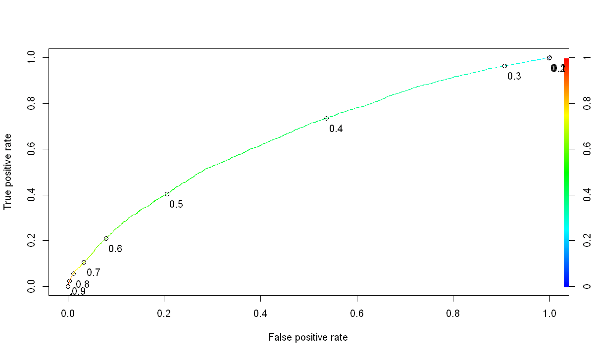
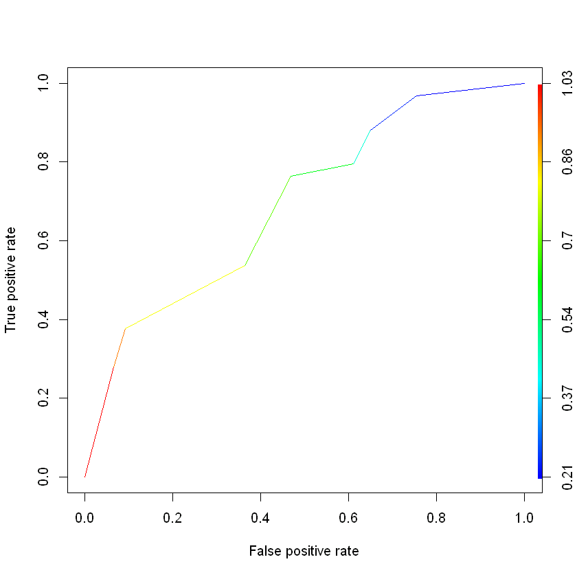
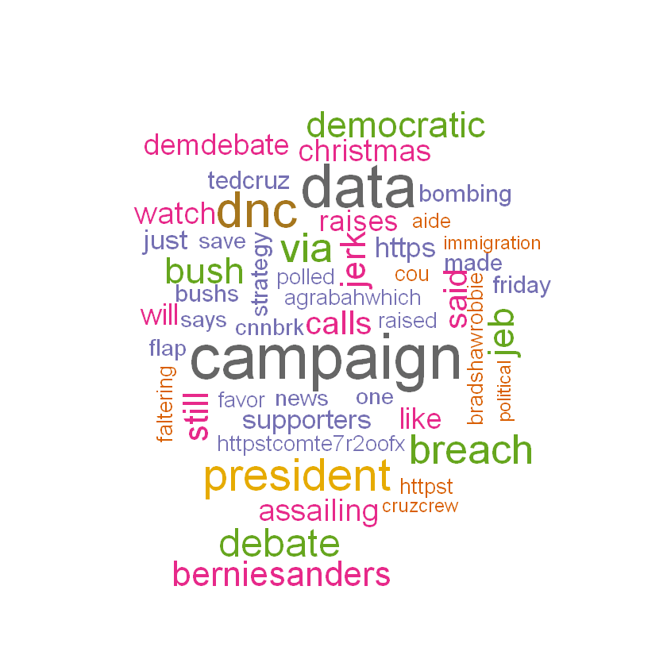
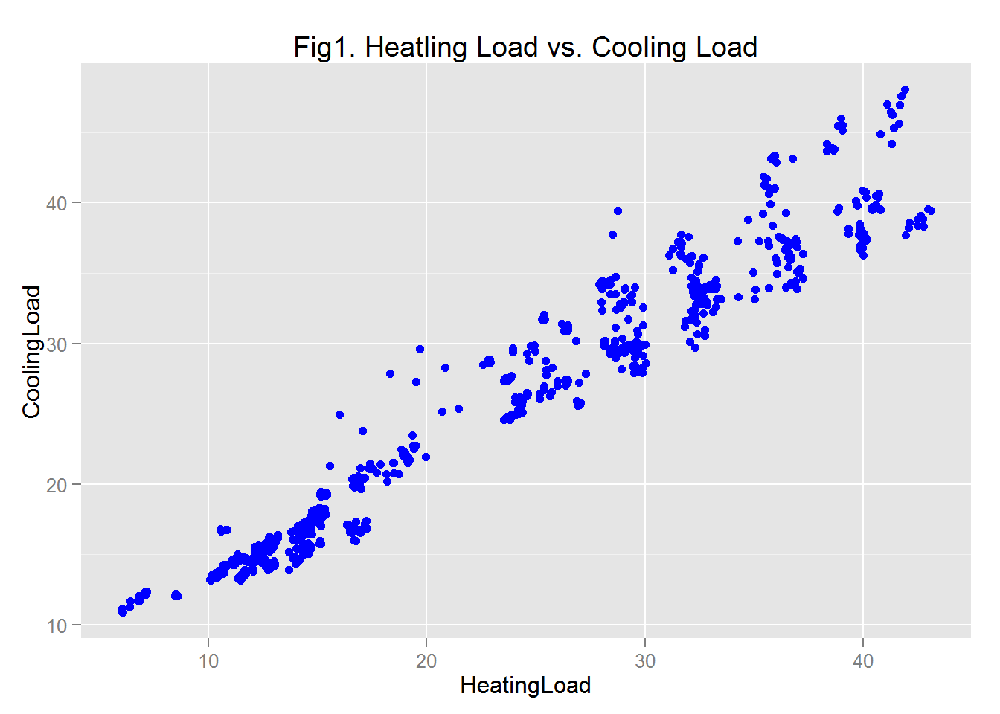
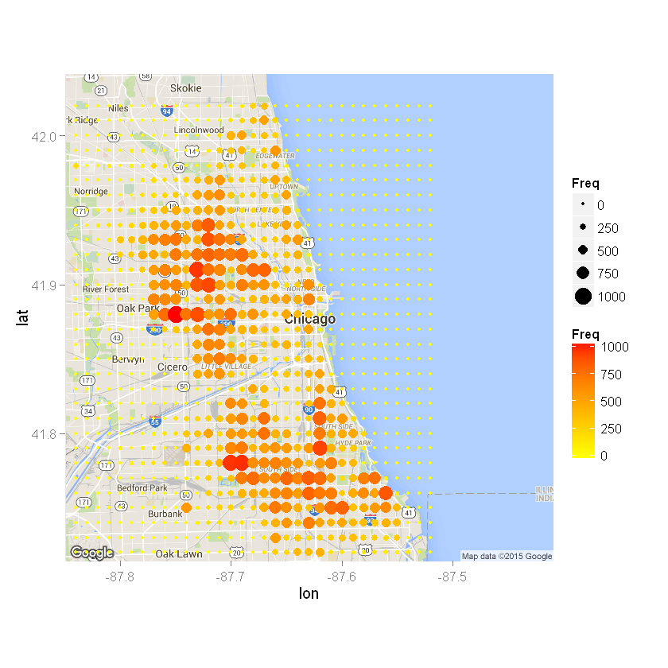

Logistic Regression Model to Predict the Risk of Readmission
for Diabetic Patients
Hospital readmissions are among the challenge that hospitals are facing today. Most of the readmission are believed to be preventable. Predictive models can be used to assess the chance of readmission of a patient within a given period. If the risk of readmission is high, patients can receive extended care before ... read more.

Multi-class Classification in R
Often the cost of classifying a high-risk patient is higher than the cost predicting a low-risk patient as a high-risk patient. Here claims data for groups of people in the Medicare program is used to predict hospital costs. ... read more.
Classification Tree for Court Decision
Classification trees have advantage over logistic regression models in that they are easy to interpret. ... read more.

Text Mining and Sentiment Analysis Using R: Analysis of 2016 Presidential Candidates
This post analyzes sentiment of tweets towards the 2016 presidatial candidate front runners using R. Tweets involving Bernie Sanders, Donald Trump, Hillary Clinton, and Ted Cruz were mined and analyzed ... read more.

Linear Regression Model to Analyze Energy Efficiency
This project performs energy efficency analysis using 12 different building shapes simulated in Ecotect. The buildings differ with respect to the glazing area, the glazing area distribution, and the orientation, amongst other parameters. Various settings are simulated as functions of the afore-mentioned characteristics. ... read more.

Exploratory Data Visualization in R
This subsection applies the plotting tools in R (including ggplot) to explore different sets of data.
The dplyr package is among the most important packages that make data analysis easier. This subsection use the dplyr package to analysis data... read more.